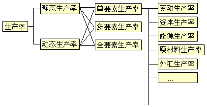

1 . 教学安排
2 . 生产率及提高生产率的意义
3 . 生产率测定
 生产率测定的意义
生产率测定的意义
生产率的种类
生产率计算公式
生产率测定的实施
我国工业生产率测定
4 . 生产率管理
5 . 提高企业生产率的途径
6 . 思考与练习题
 返回课程学习首页
返回课程学习首页
生产率的种类
生产率实际上是衡量生产要素的使用效率。按生产要素或测定的方式不同，生产率可以分为若干不同的种类
，如图3-2所示。

图3-2 生产率的种类
(一)按生产要素的种类分类
单独考察某一种生产要素，用它的投入量作为生产率公式的分母所得到的生产率，称为该要素生产率。例如：
1、劳动生产率：用劳动工时作为总投入计算的生产率。
2、资本生产率：用折旧费或固定资产账面值作为生产率公式的分母计算的生产率。
3、原材料生产率：以投入原材料的重量或价值作为生产率公式中的分母计算的生产率。
4、能源生产率：用能源一项要素(通常以千瓦为单位)作为投入来计算的生产率。
5、直接劳动成本生产率：资源投入用直接劳动总成本表示的生产率。
6、总成本生产率：将所有要素的成本总计作为投入计算的生产率。
7、外汇生产率：投入要素成本中只考虑所需的外汇一项所计算的生产率。
(二)按生产要素的数量分类
根据所考察的生产要素数量多少，生产率可分为以下几种：
1、总生产率或全要素生产率(Total productivity)：一个系统的总产出量与全部生产要素真实投入量之比。
2、多要素生产率(Multifactor productivity)：一种生产过程的实际产出量对某几种要素的实际投入量之比，它表明几种要素的综合使用效率。
3、单要素生产率(Partial-factor productivity)：一种生产过程的实际产出量对某一种给定要素的实际投入量之比。
(三)按测定方式分类
工业工程师为了提高生产率，最关心的是将本企业的生产率与历史最好水平或同行业的最高水平作比较，考察是否有了提高，以便找出差距，明确努力方向。所以，既需要确定一个时期的生产率，更重要的是要掌握生产率的变化。于是，按测定方式又可分为以下两种生 产率：
1、静态生产率(Static productivity Ratios)：是指某一给定时期的产出量与投入量之比，也就是一个测定期的绝对生产率。
2、动态生产率指数(Dynamic puductivity Indexes)：一个时期(测量期)的静态生产率被以前某个时期(基准期)静态生产率相除所得的商，它反映了不同时期生产率的变化。指数大于1就表明生产率提高了。